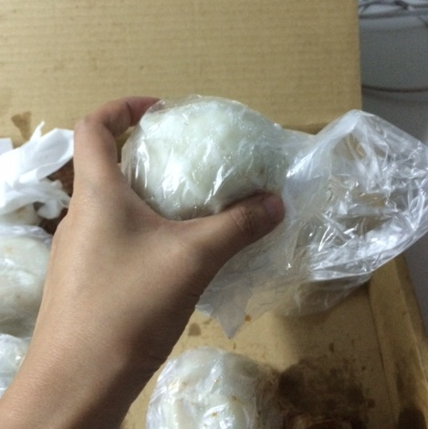
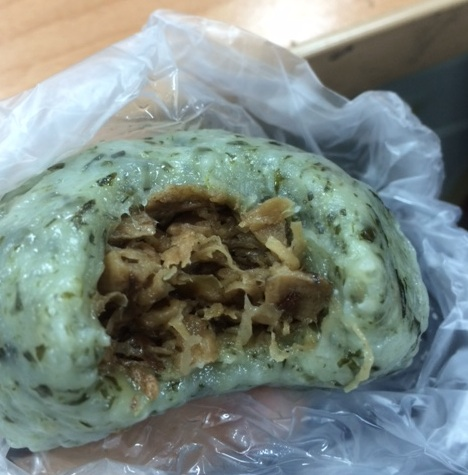
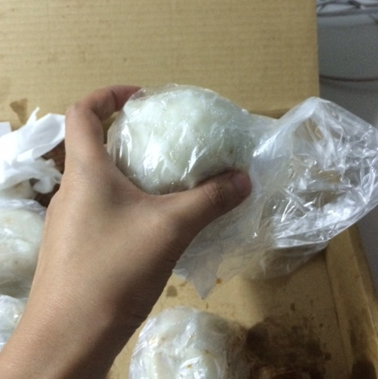
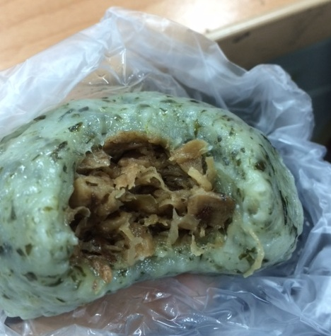

同事送來的愛心菜包 超適合當早餐 好吃美味 香到要偷偷在實驗室吃。這菜包有兩種，白色是比較水水的蘿蔔絲，綠色是比較乾有炒過的蘿蔔絲。兩個都很好吃～
 聽說這要排隊而且老闆只在早上賣，也不能訂哦，所以只能自己跑去那邊買羅或者求求同事了。 評價：必吃！！！
地址：新竹縣竹東鎮東寧路二段227號 MAP
電話：03-5947875
同事送來的愛心菜包 超適合當早餐 好吃美味 香到要偷偷在實驗室吃。這菜包有兩種，白色是比較水水的蘿蔔絲，綠色是比較乾有炒過的蘿蔔絲。兩個都很好吃～
 聽說這要排隊而且老闆只在早上賣，也不能訂哦，所以只能自己跑去那邊買羅或者求求同事了。 評價：必吃！！！